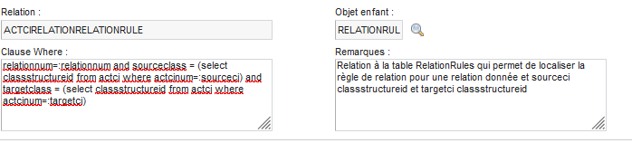
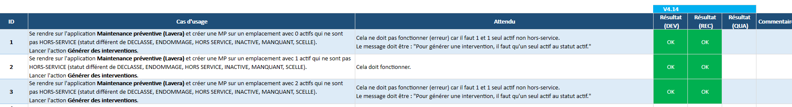

Dans cette super compétence, je vais traiter du maquetage, du codage, du chiffrage, de la conception de base de données et du language SQL et enfin du test et du recettage.
Développement : Le développement informatique concerne tout ce qui touche à l’étude, à la
conception, à la construction, au développement, à la mise au point, à la maintenance et à l’amélioration
des logiciels et autres applications et sites web.
dunegestion.com
Par développement on entends aussi couramment la capacité à écrire un code dans un language informatique
donné tel que Java, JavaScript, PHP …
Versionner : Un gestionnaire de version est un système qui enregistre l’évolution d’un fichier ou d’un ensemble de fichiers au cours du temps de manière à ce qu’on puisse rappeler une version antérieure d’un fichier à tout moment. git-smc.com
Maquettage (ou prototypage): Est une étape initiale d'un projet de développement. Pour parler de maquettage ou de prototypage il faut définir quelques notions, toute aussi importantes dans le développement d’applications mobiles : « wireframe » et « mock-up ». […] Le wireframe ou maquette fonctionnelle est un schéma définissant les zones et composants de l’interface d’une application ou d’un site internet. Il ne s’agit d’autre chose que d’un croquis qui présente la structure de la future application. Le mock-up, ou dit autrement la maquette, montre la partie visuelle du projet. Il s’agit d’une représentation statique du contenu, de la structure et des fonctionnalités de l’application. Enfin, le prototype est une maquette interactive. En plus de la partie visuelle, il montre le fonctionnement de l’application. Le prototype est extrêmement utile pour tester la convivialité du projet. yeeply.comConception de base de données (relationnelles) :
Une base de données est une collection organisée d’informations structurées, généralement stockées
électroniquement dans un système informatique. Une base de données est généralement contrôlée par un système
de gestion de base de données (DBMS). L’ensemble que constituent les données et le DBMS, ainsi que les
applications qui leur sont associées, est nommé système de base de données, ou simplement base de données.
Les bases de données relationnelles ont dominé les années 80. Les éléments d’une base de données
relationnelle sont organisés en un ensemble de tables comportant des lignes et des colonnes. La technologie
de base de données relationnelle offre le moyen le plus efficace et flexible d’accéder à des informations
structurées. (NB: il existe de nombreux type de base tels que les BDD hierarchiques, en réseau, NoSQL,
Orienté objet, distribuée, …)
oracle.com
La conception de base de données est une phase de travail où les exigences identifiées au préalable sont
utilisées comme base pour développer un système. Une autre façon de le dire est que la compréhension
commerciale des structures de données est convertie en une compréhension technique. Les questions quoi
(« Quelles données sont nécessaires ? Quels sont les problèmes à résoudre ? ») sont remplacées par les
questions comment (« Comment les données seront-elles structurées ? Comment accéder aux données ? »)
Cette phase se compose de trois parties : la conception conceptuelle, la conception logique et la conception
physique.
mariadb.com
SQL : Le langage SQL est un langage de programmation utilisé par quasiment toutes les bases de données relationnelles pour interroger, manipuler et définir des données, et pour fournir un contrôle des accès. Le langage SQL a été développé chez IBM dans les années 70 […].Le langage SQL est encore fortement utilisé aujourd’hui, mais de nouveaux langages de programmation commencent à apparaître. oracle.com
Test : Tester consiste à mettre en œuvre un ensemble de principes incontournables, en les
complétant par des compétences fonctionnelles et techniques spécifiques et, en les adaptant au mode de
développement. En d’autres termes, le test doit s’appuyer sur des incontournables qui seront déployés de
différentes façons pour différents modes de développement […]
Le journal du net
Un test doit être documenté, c'est le cahier de recette.
Recette : « Opération formelle, réalisée par le client, pour vérifier la conformité du
produit fourni (composants logiciels spécifiques, progiciels, prestations et documentation) par rapport à la
spécification validée (plus, éventuellement, les modifications acceptées). Cette vérification se fait sur la
base d’un dossier de recette et se termine par un procès-verbal de recette qui formalise l'acceptation du
client ». [2, DRECQ Vincent].
In Drifa Kesraoui. Test et recette dans un projet logiciel : évolution des méthodes et outils.
consultable dans son intégralité ici.
Chiffrage : A partir des spécifications du projet, consiste à analyser et évaluer chaque tâches selon des critères de temps ou de complexité (exemple le poker planning). On peut alors, à partir des différentes valeurs obtenues, réaliser une moyenne, une médiane ou une médiation. Le chiffrage servira de référence pour établir la durée ou la complexité de la tâche.
Je vais aborder la mise en pratique de la conception de base de données à travers une méthode en 4 points (consultable ici) appliqué à une situation du projet Bâteau.
Dans le cadre d'une migration de données, le client souhaitait garder une trace des opérations de commande (bon de commande, demande de devis, demande d'achat, etc ...). Celui-ci, disposait déjà d'une application permettant de gérer ces procédures d'achats. Une fois les besoin clients définit, plutôt que de recréer une table à partir de rien, j'ai dupliqué et épuré les tables déjà existantes, servant a l'application de gestion des commandes.
Notre client avait une idée de ce qu'il voulait, une application d'archivage, mais sans plus de précision. J'ai donc réalisé une maquette de l'application mais surtout, j'ai listé les champs qui me paraissaient les plus pertinents et modélisés les liens entre les tables et j'ai ainsi rédigé une proposition de spécificités pour cette nouvelle app. Une fois la proposition amendée puis validée, j'ai commencé à travailler à la réalisation de la solution.
C'est ici que la duplication et l'épuration des tables s'opère. A partir du travail préparatoire, je réalise la création des tables ainsi que les ajustements nécessaires pour répondre au besoin (nouveaux lien, suppression de champs, création de champs originaux, etc ...)
Nous en sommes maintenant à la dernière étape. Après plusieurs allers-retours entre le test et le développement (la confrontation entre la proposition et l'utilisation réelle de l'application eux se révélée violente), nous sommes maintenant entrés dans la phase de qual. Nous vérifions que les développements n'entrainent aucune régression sur un environnement de préprod. J'espères que le déploiement pourra s'opérer prochainement.
La conception de base de données me semble une compétence importante car elle suppose d'avoir des compétences à la fois technique (conception et réalisation de la base), d'analyse (du besoin), des connaissances métiers, des compétences rédactionnelles et enfin des compétences humaines (communication et recul nécessaire pour pouvoir reprendre son travail et répondre au mieux au besoin).
Premierement le maquetage et prototypage avec le projet Base nautique.
Dans le cadre d'une unité d'enseignement, ma classe a été amener à produire la maquette et le prototype pour la refonte du site web de la base nautique du Grand Large à Meyzieu.
Après une formation théorique et pratique sur les techniques du maquettage et du prototypage d'un site web et mobile, nous avons de manière collective procédé à une analyse du site originale. Nous avons ensuite procédé à une analyse comparative de sites aillant la même thématique. Ces étapes nous ont permis de déterminer quelles informations le site doit transmettre et quelles sont les informations manquantes en comparaison des sites similaires. A partir de ces informations, nous avons mis au point un premier zoning et une première arborescence pour le site.
Dans un second temps, de manière individuelle, nous avons été invité à produire la maquette de ce site. Pour ma part j'ai décidé de revoir le zoning. A une page de courte de menu conduisant à plusieurs sections, j'ai préféré une page d'accueil donnant l'ensemble des éléments de bases (offres de base, tarifs, plage horaire, accès) puis un ensemble de page permettant d'accéder à des informations plus détaillées et spécifiques. J'ai donc mis à jour le schéma de l'arborescence de mon site.
Avec le logiciel Adobe XD j'ai donc réalisé une maquette dans laquelle j'ai inséré les photos auxquelles j'avais accès et simulé les médias dont je ne disposais pas ainsi que les textes informatifs non complets. J'ai réalisé un ensemble de logos (après avoir réfléchi au type d'animation qui allait les affecter) et déterminé un ensemble de polices et des couleurs à utiliser au long du site (une ébauche de charte graphique). Après avoir intégré tous ses éléments, j'ai commencé à réaliser le prototype de mon site. Cette étape a été pour moi la plus plaisante, car elle m'a permis d'avoir un aperçu de son fonctionnement final.
A la fin de ce projet nous avons chacun présenté nos travaux. Si l'agencement de mon site et ses animations n'ont rien eu à envier aux travaux de mes camarades, je dois reconnaitre que mes qualités de designer laissent à désirer. Je reconnait mon incapacité à produire un ensemble esthétique correcte. Comme je mitige la notion d'autonomie dans la compétence sur le travail je sais reconnaitre que pour ce genre de tâche je dois collaborer avec des gens dont c'est le corps de métier, les Designers UX/UI.
Ensuite
Afin de pouvoir travailler en groupe sur la réalisation d'un site pour la base nautique Le grand Large à
Meyzieu, j'ai mis en place un repository. J'ai donc initialiser un projet via mon Editeur (webStorm) puis
j'ai initier le repository. J'ai ensuite réalisé mon commit avec mes fichiers initiaux. Apres avoir push ces
documents sur Master, j'ai initier une branche Dev, à partir de laquelle nous avons créé les branches
nécessaire à chacune des étapes. Une fois chaque réalisations poussées sur sa branche respective, nous
effectuions une merge request (via la page web de git) en direction de Dev. Je gérais alors la demande de
merge en traitant les éventuels conflits.
Avant de tirer une nouvelle branche nous avons veillé à effectuer les pull nécessaire à la mise à jour du projet.
Lorsque nous avons terminé l'ensemble des développements, j'ai fusionné la branche DEV et la branche Master. En raison d'une maladresse de ma part, lors de la gestion des conflits j'ai perdu l'ensemble de nos développements. J'ai alors récupéré l'ensemble de notre travail en consultant une version antérieure du projet. Cette expérience me permet d'affirmer qu'en l'absence d'une bonne maitrise de git et son fonctionnement, une merge sur Master doit toujours être faite calmement….
Je vais aborder le développement ou code au travers du projet Pétrole et du projet Bus.
En tant que développeur sur le projet Pétrole je suis en charge de l'analyse des bugs,
de leurs résolutions et du développement de solutions logicielles spécifiques. A ce titre je suis amené à
travailler essentiellement en Java J2EE, langage dans lequel est développé la GMAO Maximo.
Ce travail de développement s'opère en plusieurs temps. Je commence par étudier le ticket, pour vérifier sa
qualification (bug ou évolution) et je propose une estimation du temps de réalisation. Dans un second temps,
je peux, en cas de doute discuter de la solution envisagé avec mon collègue sur ce projet.
Ces solutions peuvent être un ajout de lignes, la création de méthode, ou la rédaction d'une nouvelle classe.
Je passe ensuite au développement de la solution sur une branche dédiée au ticket en cours. Enfin, après
avoir push j'effectue une merge request. Mon collègue, en charge de cette manipulation, va alors faire une
relecture de mon code et me soumettre ses remarques afin que je fasse des corrections si nécessaires.
S'enchaine ensuite les différentes étapes de test interne puis externe.
Dans le cadre du projet bus (configuration d'un environnement Maximo avec l'adaptation de l'apparence dans le cadre d'une avant-vente) j'ai eu à travailler, en collaboration avec le service UI/UX, sur des feuilles JSP, et CSS. L'objectif était de personnalisé l'apparence de Maximo en un minimum de temps et de changement (pour des raisons de compatibilité en cas de migration). Cela c'est caractérisé par l'ajout d'image de fond, l'ajout d'effet en cas de survol sur un bouton et l'ajout des couleurs spécifiques à l'entreprise, dans les menus, les polices et les boutons.
Malgré mon sens de l'esthétique assez personnel, cette partie de mon travail est celle que je préfère. En effet, elle me permet de rendre les fonctionnalités que je développe en Java agréable à l'usage du client final : l'utilisateur. De plus, en portant un regard critique sur ma pratique du développement, il apparait que je manque constamment l'etape des tests unitaires dans le developpement de code Java. Pour tenter de justifier ce manquement, je me cache derrière l'idée que personne ne le pratique sur ce projet, excuse falacieuse car en tant que developpeur principal, sa mise en place est de ma responsabilité.
Traitons la pratique du language SQL au travers du projet Pétrole. Même si encore une fois, c'est une compétence que je sollicite régulièrement sur l'ensemble de mes projets comme par exemple Chimie avec la migration de base de données .
Maximo, pour articuler deux objets entre eux, utilise des relations. Ce sont des requetes sql entre deux objets dont seule la clause WHERE est spécifiable.
Ces requetes peuvent être particulièrement complexes, certaine depassant les 4000 caractères.
Les relations ont pour finalités de permettre l'affichage des informations dans les differents écrans de Maximo.
C'est ce qui pemettra par exemple d'affiche l'ensemble des lignes d'un bon de commande dans la fiche du dit bon.
En tant que développeur Maximo, ce type de requête SQL est au coeur de mon travail.
Je vais enfin aborder le test et le recetage comme pratique finale du développement et j'utiliserai la pratique que j'en ai dans le projet Pétrole.
Lorsque j'execute un developpement demandé dans le cadre d'une correction ou d'une évolution, celui ci vise à remplir une fonction spécifique. Il doit permettre un comportement applicatif. Le travail de développement ne saurait être fini avant que le comportement ne soit implémenté. Par cons"équent chaque dev conduit à un test. En revanche, ce qui garanti qu'un test à eu lieu est le cahier de recette. Pour chaque ticket auquel je reponds, j'elabore la liste des fonctionnalistés qui doivent être présentes à la fin de mon travail. Lorsque j'ai fini mon developpement, je valide chaque comportement de l'application et le consigne dans le cahier de test. Je ne transmet pas au testeur tant que je n'ai pas tout valider. La personne chargée de faire les test avant livraison va a son tour remplir son cahier de test. Lors de la livraison en intégration nous fournissons une copie de notreexcel qui sera complété par le client.
Je vais terminer par mettre en contexte la capacité de chiffrage par mon
expérience dans le projet Pétrole.
Comme je l'expliquais précedemment, pour chaque
fonctionnalité demandé nous listons précisement les tenants et aboutissants de nos developpements. Tous les
mardi nous tenons une réunion avec notre client durant laquel nous parlons de l'avancement du projet. Lorque
nous sommes dans la phase de clôture d'une version, nous parcourons le back log et le client nous indique
les ticket a traiter pour la prochaine livraison. A l'issu de cette réunion, nous discutons entre développeurs,
afin de determiner le chiffrage de chacun des tickets. Nous determinons, au vu de la compléxité de la demande le temps necessaire, selon nous, à sa
réalisation. Lorsque le temps est trop disparatre nous discutons de notre compréhension du ticket. Cette discution est particulierement interessante car
c'est pour moi l'occasion d'echanger avec mon collègue, plus expérimenté. Elle me permet par ailleurs de
suivre mon évolution technique lorsque sur une question plus ardue, j'arrive à un chiffrage voisin de celui
de mon collegue.
Être un développeur c'est disposer d'un ensemble de capacités techniques que l'on va mobiliser ou non afin de répondre à un besoin de l'utilisateur du site (besoin d'information, de fonctionnalités ...). Les besoins et les techniques évoluants sans cesse, le développeur doit constamment chercher a se former pour remplir au mieux sa fonction.